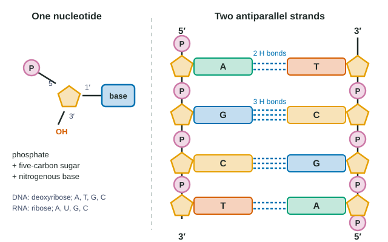

Nucleic Acids
Nucleic acids are polymers of nucleotides, each a phosphate, a five-carbon sugar and a nitrogenous base.
Part 1 · Hook
Why this matters
If you could unwind the DNA from one of your cells and stretch it out, it would be about two meters long, yet it fits inside a cell too small to see. Every time that cell divides it makes a near-perfect copy of all of it, about six billion letters, and passes one copy to each new cell. The trick behind both feats is a molecule built like a twisted ladder whose rungs only fit together one way.
Part 2 · Before you start
What this builds on
Part 3 · Prerequisite check
Quick check before you start
1. Which bond holds two water molecules to each other?
- A covalent bond
- A hydrogen bond
- An ionic bond
Show the answer
A hydrogen bond attracts the δ+ hydrogen of one molecule to a δ− atom, such as O or N, of another. Covalent bonds hold atoms together inside a molecule.
- A covalent bond:
- Correct: A hydrogen bond:
- An ionic bond:
2. Which element do nucleic acids contain that typical sugars and fats do not?
- Phosphorus
- Carbon
- Oxygen
Show the answer
Nucleic acids contain C, H, O, N and P; the phosphorus is in phosphate groups. Sugars and fats are C, H and O.
- Correct: Phosphorus:
- Carbon:
- Oxygen:
3. What is released each time dehydration synthesis adds a monomer to a polymer?
- A carbon dioxide molecule
- A hydrogen ion
- A water molecule
Show the answer
Each new link releases one H2O: an –OH from one monomer and an –H from the other.
- A carbon dioxide molecule:
- A hydrogen ion:
- Correct: A water molecule:
Part 4 · See it
See it first

Part 5 · Step by step
How it works, step by step
- A nucleotide has three parts: a phosphate group, a five-carbon sugar and a nitrogen-containing base.It is the monomer of DNA and RNA; DNA nucleotides carry deoxyribose and one of A, T, G or C, RNA nucleotides carry ribose and one of A, U, G or C.
- Dehydration synthesis links the phosphate of one nucleotide to the 3′ carbon of the sugar of the last nucleotide in a chain.The nucleotides form a strand with a sugar-phosphate backbone and bases sticking out to one side; the strand has two different ends, 5′ and 3′.
- A and T, and G and C, have shapes and partial charges that line up to form hydrogen bonds (two for A–T, three for G–C).Two strands can join base to base only where their sequences are complementary: every A opposite a T, every G opposite a C.
- The bases pair up only when the two strands run in opposite directions.DNA is two antiparallel strands twisted into a double helix, with the backbones outside and the paired bases inside.
- The backbone is the same all along the molecule, but the order of bases can be anything.The base sequence carries information; a gene is a stretch of DNA whose sequence the cell uses, and complementary pairing lets each strand be copied.
Part 6 · Key ideas
Key ideas
- DNA vs RNA: DNA has deoxyribose, thymine (T) and is usually double-stranded; RNA has ribose (one more –OH), uracil (U) instead of T, and is usually single-stranded.
- Complementary base pairing: A pairs with T (or U in RNA) through two hydrogen bonds; G pairs with C through three. In double-stranded DNA, %A = %T and %G = %C.
- Antiparallel: one strand runs 5′→3′, its partner 3′→5′. Always write a sequence from its 5′ end; the partner of 5′-ATG-3′ is 5′-CAT-3′.
- The strands are held together by hydrogen bonds (weak, easy to separate by heating) but each strand is held together by covalent bonds in its backbone (strong, intact when strands separate).
Part 7 · Misconception
A common mistake
The wrong idea: To write the complementary strand, you just swap each base for its partner and read it in the same direction.
What actually happens: Swapping bases is half the job. Because the strands are antiparallel, the partner strand runs the other way. Swap each base, then reverse the order so the new strand is written from its own 5′ end. The partner of 5′-AGGT-3′ is 3′-TCCA-5′, which is written 5′-ACCT-3′.
Part 8 · Check yourself
Check yourself
Exam-style questions. Anything you miss goes into your review queue.
1. Which features does RNA have that DNA does not? Select all that apply.
- Ribose sugar
- Phosphate groups in its backbone
- The base uracil
- A 5′ end and a 3′ end
- The base guanine
Show the answer
The two chemical differences are the sugar (ribose versus deoxyribose) and one base (uracil versus thymine). Backbones, strand direction and A, G, C are shared.
- Correct: Ribose sugar: RNA only. DNA uses deoxyribose, which lacks the –OH on carbon 2′.
- Phosphate groups in its backbone: Both have sugar-phosphate backbones.
- Correct: The base uracil: RNA only. DNA uses thymine in its place.
- A 5′ end and a 3′ end: Both: every nucleic acid strand has a direction.
- The base guanine: Both use guanine.
2. Two DNA molecules from different genes are each exactly 1,000 base pairs long and each 25% A, 25% T, 25% G and 25% C. Which statement about them is most accurate?
- They carry the same information, since their base percentages are identical.
- They can carry different information, since their base order can differ.
- They have identical sequences, since DNA pairs A with T and G with C in each molecule.
- They are unlikely to both be real genes, since genes differ in base percentages.
Show the answer
Information is carried by the order of bases, not by how many of each there are. Two molecules with the same composition can have entirely different sequences.
- They carry the same information, since their base percentages are identical.: Percentages say nothing about order; information is in the sequence.
- Correct: They can carry different information, since their base order can differ.: Correct. Like words made of the same letters, molecules with the same base counts can have completely different sequences.
- They have identical sequences, since DNA pairs A with T and G with C in each molecule.: Pairing links the two strands of one molecule; it does not force two different molecules to have the same order.
- They are unlikely to both be real genes, since genes differ in base percentages.: Genes can have the same percentages; what makes them different is their sequences.
Model
A short stretch of double-stranded DNA
The model shows nine base pairs of a DNA molecule. Strand 1 is on top, written 5′ to 3′ from left to right; Strand 2 is below it.
| Strand 1 | 5′ | A | T | G | G | C | A | T | T | C | 3′ |
|---|---|---|---|---|---|---|---|---|---|---|---|
| Strand 2 | 3′ | T | A | C | C | G | T | A | A | G | 5′ |
3. What is the sequence of Strand 2, written from its 5′ end to its 3′ end?
- 5′-TACCGTAAG-3′
- 5′-GAATGCCAT-3′
- 5′-ATGGCATTC-3′
- 5′-CTTACGGTA-3′
Show the answer
Strands are antiparallel. Read Strand 2 from its 5′ end, which is on the right: G A A T G C C A T.
- 5′-TACCGTAAG-3′: These are Strand 2's bases read left to right, which is its 3′ to 5′ direction. Written 5′ to 3′, the order must be reversed.
- Correct: 5′-GAATGCCAT-3′: Correct. Strand 2 runs 3′-TACCGTAAG-5′; reversed to start at its 5′ end, it reads 5′-GAATGCCAT-3′.
- 5′-ATGGCATTC-3′: This is Strand 1's sequence, not its partner.
- 5′-CTTACGGTA-3′: This is Strand 1 reversed without pairing the bases.
4. How many hydrogen bonds hold these nine base pairs together?
Type a number in hydrogen bonds.
Show the answer
Strand 1 is A T G G C A T T C. Positions 1, 2, 6, 7 and 8 are A–T pairs: 5 × 2 = 10. Positions 3, 4, 5 and 9 are G–C pairs: 4 × 3 = 12. Total 10 + 12 = 22.
- Answer: 22 hydrogen bonds
5. Which end of Strand 1 carries a free phosphate group?
- The left end, labeled 5′
- The right end, labeled 3′
- Both ends, since each nucleotide has a phosphate
- Neither end, since the phosphates link to the bases
Show the answer
Strand direction comes from the sugar's numbered carbons: a free phosphate on carbon 5′ marks the 5′ end; a free –OH on carbon 3′ marks the 3′ end.
- Correct: The left end, labeled 5′: Correct. The 5′ end of a strand has a free phosphate attached to the 5′ carbon of its sugar.
- The right end, labeled 3′: The 3′ end has a free –OH on the 3′ carbon, where new nucleotides would be added.
- Both ends, since each nucleotide has a phosphate: Every nucleotide has a phosphate, but inside the strand each one links two sugars; only at the 5′ end is one left free.
- Neither end, since the phosphates link to the bases: Phosphates link sugars to sugars in the backbone; the bases are attached to carbon 1′.
6. An RNA molecule has the same base sequence as Strand 1, except that RNA uses its own bases. What is the RNA's sequence?
- 5′-AUGGCAUUC-3′
- 5′-ATGGCATTC-3′
- 5′-UACCGUAAG-3′
- 5′-AUGGCUAAC-3′
Show the answer
RNA uses the same A, G and C as DNA, with U in place of T. Matching Strand 1: ATGGCATTC becomes AUGGCAUUC.
- Correct: 5′-AUGGCAUUC-3′: Correct. Every T becomes U; A, G and C stay the same.
- 5′-ATGGCATTC-3′: RNA does not use thymine; each T must be uracil.
- 5′-UACCGUAAG-3′: This is the complement of Strand 1 with U for T; the RNA was meant to match Strand 1, not pair with it.
- 5′-AUGGCUAAC-3′: Only T changes to U. Changing A to U (or the order of bases) gives a different sequence.
Data table
Base composition of DNA from five sources
Researchers purified DNA from four organisms and from a virus that infects bacteria (Virus X), broke each sample down into nucleotides, and measured the percent of each base. Values are rounded and may not add to exactly 100.
| Source | Adenine (%) | Thymine (%) | Guanine (%) | Cytosine (%) |
|---|---|---|---|---|
| Human | 30.9 | 29.4 | 19.9 | 19.8 |
| Wheat | 27.3 | 27.1 | 22.7 | 22.8 |
| Yeast | 31.3 | 32.9 | 18.7 | 17.1 |
| E. coli (a bacterium) | 24.7 | 23.6 | 26.0 | 25.7 |
| Virus X | 24.0 | 31.2 | 23.3 | 21.5 |
7. Which conclusion about Virus X is best supported by the data?
- Its DNA is single-stranded, since its %A does not match its %T and its %G does not match its %C.
- Its DNA contains uracil in place of thymine, since its values do not follow the pattern of the organisms.
- Its DNA is double-stranded but contains more hydrogen bonds than the organisms' DNA.
- Its measurements are less reliable than the others, since a virus is too small to give accurate data.
Show the answer
In double-stranded DNA, %A = %T and %G = %C because the bases pair. A sample that breaks this rule must have unpaired bases: a single strand.
- Correct: Its DNA is single-stranded, since its %A does not match its %T and its %G does not match its %C.: Correct. Equal A and T (and G and C) result from base pairing between two strands. Virus X's 24.0% A versus 31.2% T shows its DNA is not paired.
- Its DNA contains uracil in place of thymine, since its values do not follow the pattern of the organisms.: The table reports thymine for Virus X (31.2%), so its nucleic acid has T, not U.
- Its DNA is double-stranded but contains more hydrogen bonds than the organisms' DNA.: More hydrogen bonds would not break the A = T rule; in any double-stranded DNA, A pairs with T.
- Its measurements are less reliable than the others, since a virus is too small to give accurate data.: Size does not make the measurement unreliable; the pattern is consistent with a real structural difference.
Part 9 · Summary
Summary
Nucleic acids are polymers of nucleotides, each a phosphate, a five-carbon sugar and a nitrogenous base. Phosphates link the sugars into a backbone with a 5′ end and a 3′ end. DNA (deoxyribose; A, T, G, C) is usually a double helix of two antiparallel strands held together by hydrogen bonds between complementary bases, A with T and G with C. RNA (ribose; A, U, G, C) is usually single-stranded. The order of bases carries genetic information, and genes are stretches of that sequence.
Part 10 · Up next
What comes next
Part 11 · Connections